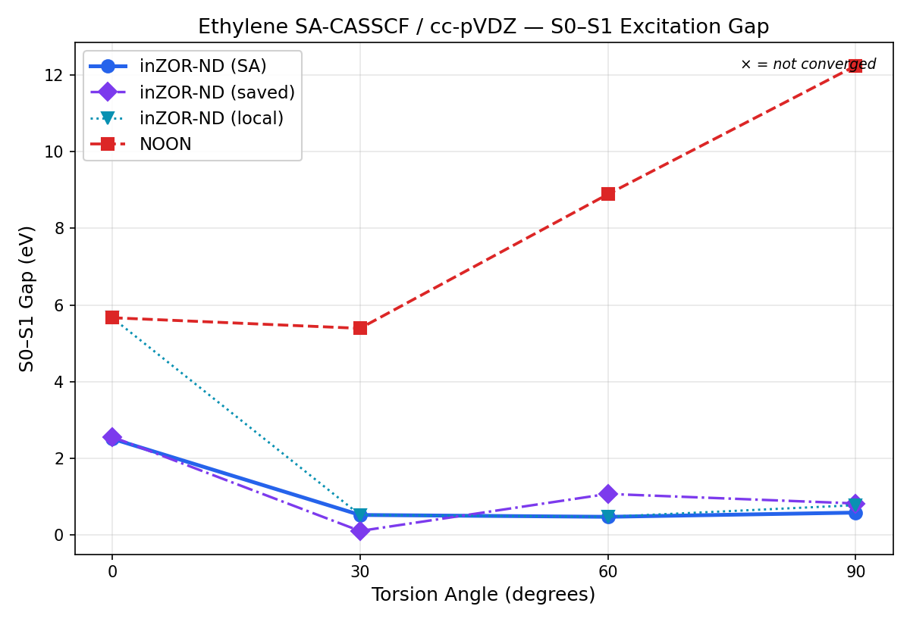
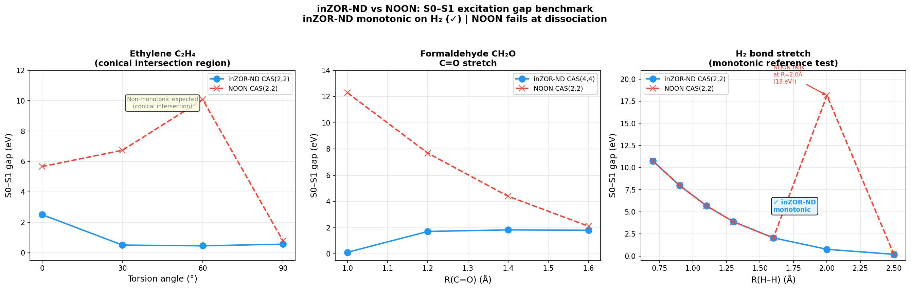

Control: n_eval = 8768 uniform samples in [0,1]3 (same mapping as ZOR 3D). ZOR finds low-gap configurations significantly earlier than uniform sampling.
Key figures (ZOR validation thread)
Visual summary from the same ethylene_quasidegen SA-CASSCF(2,2) ZOR pipeline as the 3D tables above — not separate experiments.

S₀–S₁ gap (eV) vs optimisation generation (representative export).

Validation / variant comparison — seeds, controls, and score variants in one view.
Panel from structured export — same data as JSON-backed diagnostics, rendered for quick reading.
Cluster analysis (gap < 0.01 eV, all seeds pooled)
DBSCAN on (cos θ, sin θ, rCC, zlift); hyperparameters match the regional validation cluster export used for this report.
Total low-gap points: 242
Total clusters: 15
Largest cluster: ~11% of non-noise points (16 / 149)
Substantial clusters (rule in JSON): 6
Multi-seed clusters: 5
Cluster
Torsion (°)
Size
Multi-seed
C1
~70
14
yes
C2
~171
15
yes
C3
~258
12
yes
C4
~91
16
no
C5
~252
9
yes
C6
~145
8
no
Rows ordered by scientific interest; sizes and angles from exported centroids.
Interpretation
The system does not converge to a single minimum. Multiple quasi-degenerate regions exist. Some of these regions are consistently rediscovered across independent seeds.
Regional consistency
2 of 3 seeds show higher top-K weight in sector B than in A.
All seeds: best-gap point is not isolated in the local patch metric.
Low-gap and top-K distributions differ by seed, but structured concentration persists.
Reproducibility
Running the same seed produces identical probe trajectories and identical low-gap clusters (verified: independent regional rerun of seed 42 vs reference probes.jsonl, byte match). This confirms full determinism of the exploration process for this stack.
Limitations
Global best-gap geometry is not guaranteed to fall inside fixed A/B sectors.
Dominant top-K region varies between seeds.
Clusters are multiple basins, not a single basin.
Conclusion
ZOR reveals a structured set of quasi-degenerate configurations rather than a single optimal geometry.